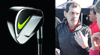

Collaborators¶
The lab is very grateful to our key collaborators (listed below).
We are also actively involved in collaborations with:
- University of Auckland, New Zealand
- University of Leuven, Belgium
- University of Liverpool, UK
- University of Otago, New Zealand
- University of Queensland, Australia
- University of Virginia, USA
Liverpool John Moores University¶
|
|
|
Nike Golf¶
|  |
|
Hull-York Medical School¶
|
University of Western Australia¶
|